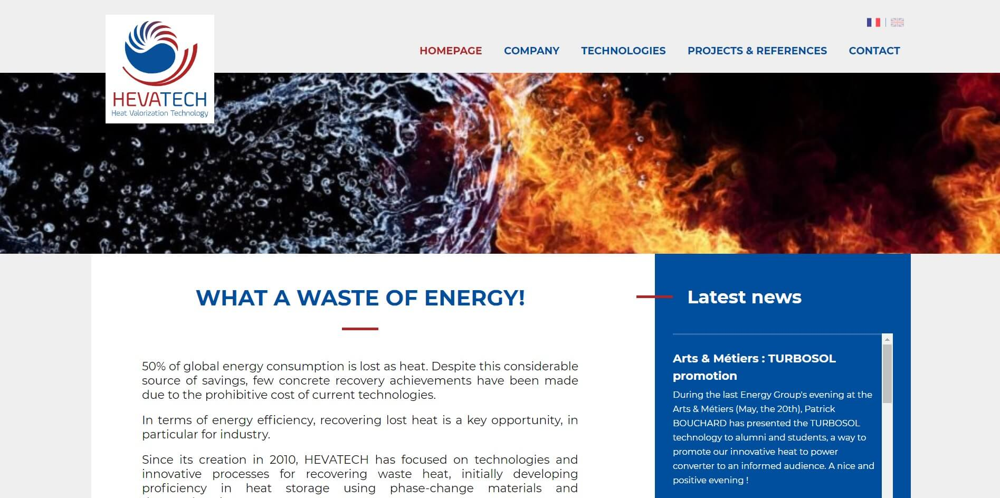

← all projects
CodeIgniter Website
To conclude college in France, I've done an intership as a web developer in a web agency. I've been involved in many projects for some little tasks. However, near the end of the internship, I had the opportunity to develop a websites from scratch, based on the designer's mockups.
- 2017
- Web Development
- CodeIgniter, PHP, HTML, CSS, UIkit
see website

I have been in charge of the front-end and the back-end development. The front-end was coded with HTML and CSS (Sass) along with the framework UIkit (similar to Bootstrap). For the back-end, I used CodeIgniter (PHP) with a custom CMS made by the developer of the agency.